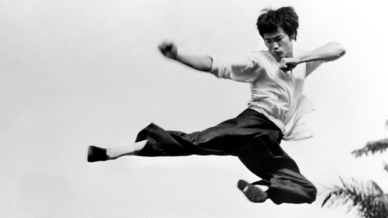
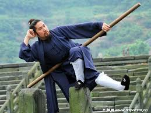

The Chinese term kung fu isn't just about martial arts history, as it describes any individual accomplishment or refined skill that is achieved after hard work. In that sense, the actual term kung fu can be used to describe any skill obtained in such a manner, not just those of the martial arts variety. Still, kung fu (also called gung fu) is widely used to describe a significant portion of the Chinese martial arts in the contemporary world. In this sense, the term is representative of highly varied martial systems that are somewhat difficult to trace. This is something that sets the Chinese arts apart from the majority of martial arts systems, where a clearer lineage is often known.
History of Kung Fu

It appears that China's Yellow Emperor Huangdi, who took the throne in 2698 B.C., began to formalize the arts, however. In fact, he invented a form of wrestling taught to the troops that involved the use of horned helmets called Horn Butting or Jiao Di. Eventually, Jiao Di was improved upon to include joint locks, strikes, and blocks and even became a sport during the Qin Dynasty (approximately 221 B.C.).
Characteristics of Kung Fu

Kung fu is primarily a striking style of martial arts that utilizes kicks, blocks, and both open and closed hand strikes to defend against attackers. Depending on the style, kung fu practitioners may also possess knowledge of throws and joint locks. The art utilizes both hard (meeting force with force) and soft (using an aggressor's strength against them) techniques. Kung fu is widely known for its beautiful and flowing forms.